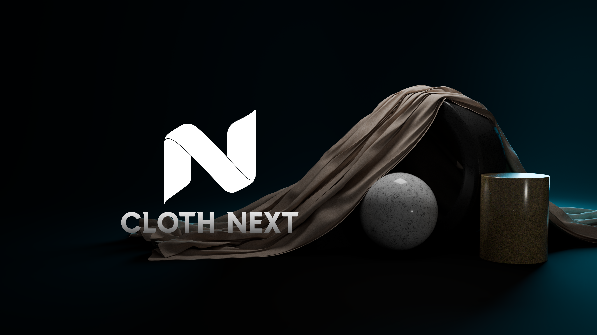
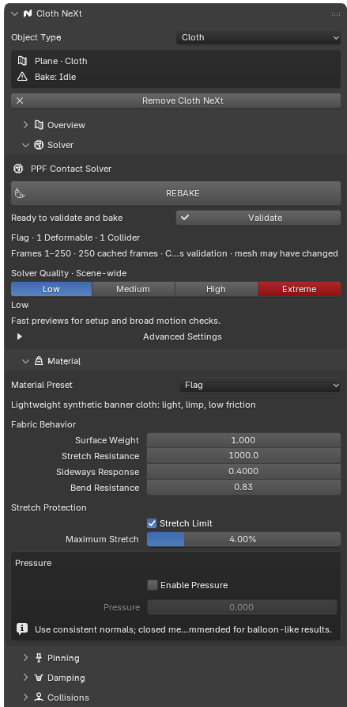
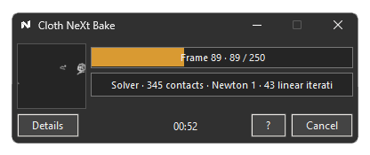

Animated pins
Keep waistbands, cuffs and attachment points connected to character motion while the remaining cloth stays free.
Cloth NeXt connects Blender to the GPU-powered PPF Contact Solver through an artist-focused workflow for layered garments, animated characters and demanding production Bakes.
High-contact cloth is where simple setups become fragile: layers intersect, pins drift, long Bakes fail late, and technical solver details interrupt the creative loop.
Cloth NeXt turns the external PPF solver into one deliberate Blender workflow—from material and collision setup to validated cache playback.

Assign a role, choose a material starting point, set quality, pins and collisions, then Bake. Advanced controls stay available without dominating the first setup.

Keep waistbands, cuffs and attachment points connected to character motion while the remaining cloth stays free.
Solve layered garments and multiple deformables together instead of treating every piece as an isolated effect.
Direct supported wind, gravity and air behavior with Blender Empty objects that fit naturally into animation.
Use the same workflow for experimental Rod / Cable curves and volumetric Soft Body simulations.

The dedicated Bake Companion keeps progress and live activity visible while Blender remains part of the workflow. Expand Details for performance and ETA; cancel safely when a run is no longer worth waiting for.
Simulation is demanding. Cloth NeXt does not pretend otherwise—it makes failure visible, documented and recoverable.
Known failures map to a cause, corrective action and dedicated documentation.
Topology, ranges, materials and scene roles are checked before expensive work begins.
Incomplete output is never presented as a finished Bake, and old results survive failed rebakes.
Optional automatic cancellation can protect the workstation at a configurable RAM threshold.
The PPF Contact Solver is separate software developed and distributed by ST Tech / ZOZO. Cloth NeXt guides installation from the verified official source but never bundles or redistributes it. GPU memory and simulation time depend on scene complexity.
GPU-powered cloth simulation with a workflow designed to stay inside the artist's mental model.